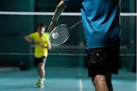

BADMINTON

What is Badminton?
- Badminton is a racquet sport played using racquets to hit a shuttlecock across a net. Although it may be played
with larger teams, the most common forms of the game are "singles" and "doubles"
How to play SINGLES BADMINTON?
every time they have an even amount of points. A player serves from the left every time they have an odd amount
of points. Each player will retain serve for as long as they keep winning points.
How to play DOUBLE BADMINTON?
with their team-mate, so long as they keep winning points. If the receiving side takes the point, they assume serve.
The Benefits of playing Badminton
- Benefits of Badminton
- Badminton is a Total Body Workout
- Socialising
- Badminton Improves Your Mental Wellbeing
- Heart Health
- Badminton Helps Reduce Health Risks
- Increased Life Expectancy
- Improved Mobility
- Badminton is a Flexible Exercise
Home